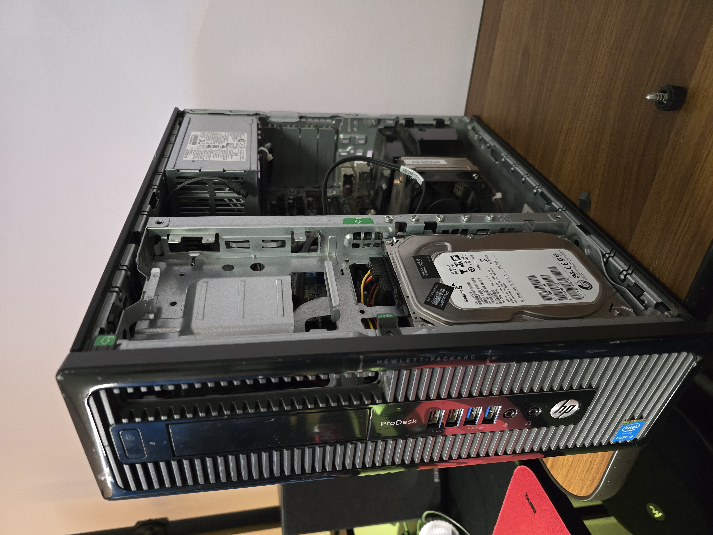
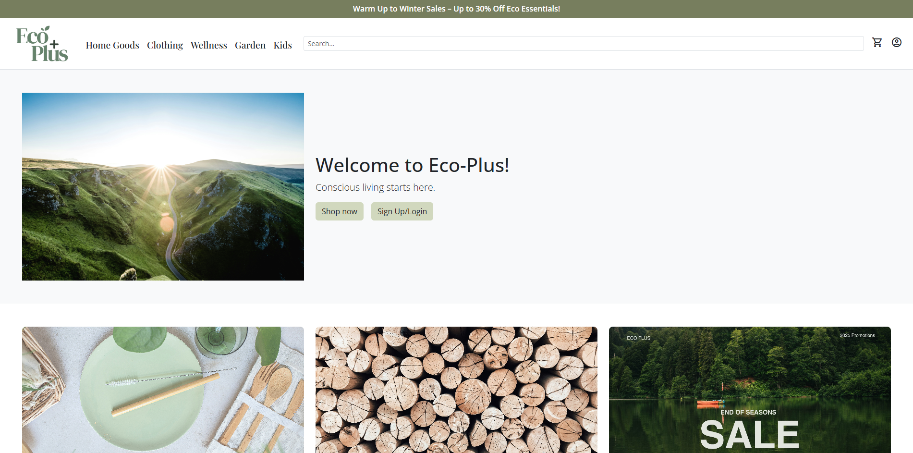
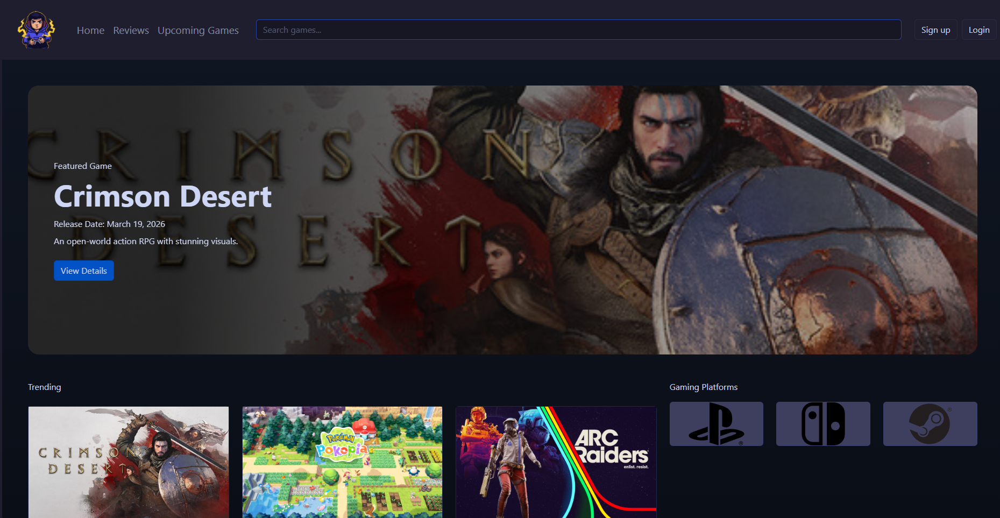
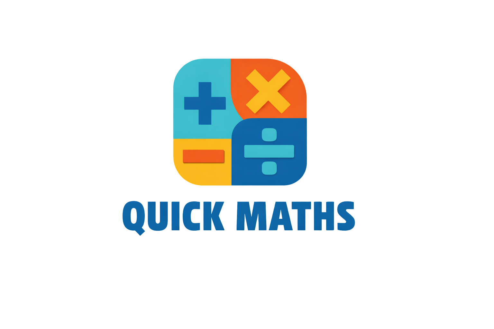

Hello, my name is Hendrix. I am currently a third-year bachelor student in Information Technology. Throughout my studies, I have discovered my true passion for IT. I enjoy creating websites as a hobby, whether it's building my portfolio or developing more dynamic websites.
In addition to web development, I am self-studying networking and exploring system administration. My home lab projects are my first steps into getting hands-on experience in it. I am always looking for opportunities to grow in this field.

This is a personal project out of interest. I created my router using an old PC and installed pfSense as the operating system. I also made a server running CasaOS that hosted Immich and Jellyfin.
Technologies: PfSense, Ubuntu Server, CasaOS

The project was developed as group project. I contributed to the front-end development using Bootstrap and assisted in implementing session management to retain user cart data. Additionally, I deployed the website on InfinityFree.
Technologies: PHP, MySQL, HTML, CSS, Bootstrap

This project was done by groups of two. I mainly worked on the front-end and helped out with the API integration as well as refactoring of codes in order to make it cleaner and more organised. It was a fun project that made me learn my first API implementation. Lastly, I deployed the website through InfinityFree.
Technologies: Bootstrap, PHP, JavaScript, HTML, CSS, MySQL

A simple arithmetic game developed using Swift and UIKit in XCode. It is aimed to be a fun game to improve the mental math skills of kids.
Technologies: XCode, Swift, UIKit, Firebase